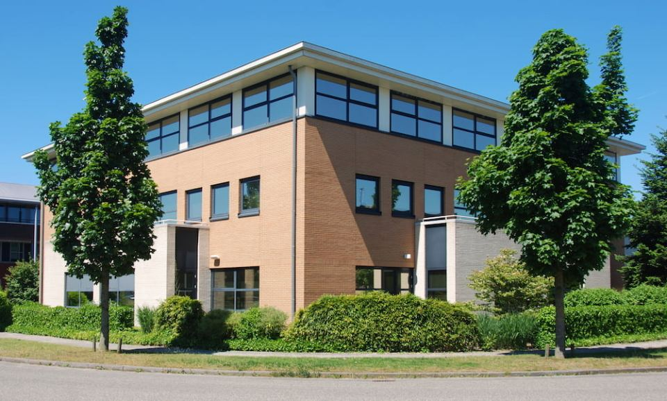
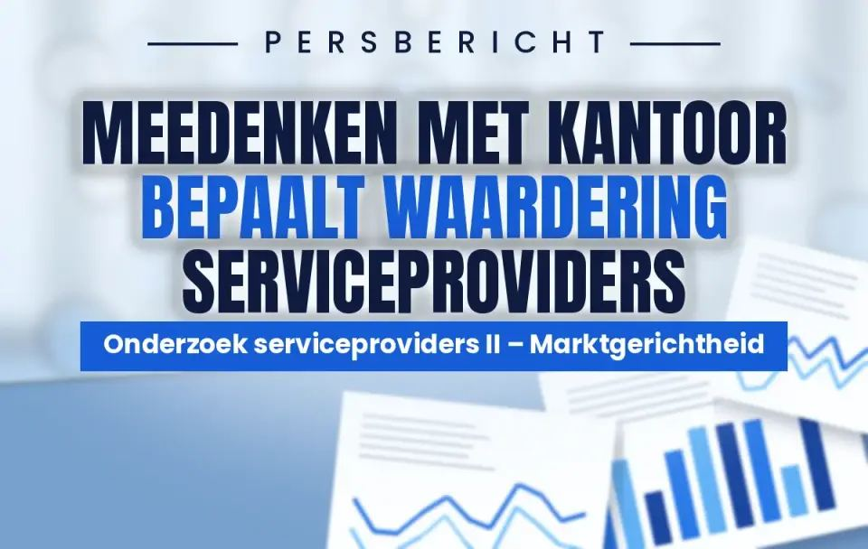
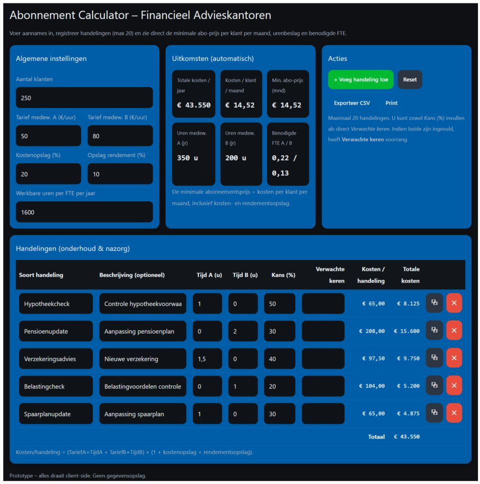
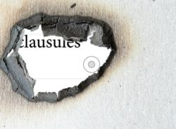

Bureau DFO
Jouw partner waar het gaat om succesvol ondernemen in de financiële dienstverlening


Resultaten Onderzoek serviceproviders 2026 II zijn bekend
De marktgerichtheid van serviceproviders blijft achter bij wat financieel adviseurs belangrijk vinden. Op alle acht onderzochte aspecten ligt de waardering lager dan het belang dat adviseurs eraan hechten. Vooral het meedenken met het advieskantoor blijkt bepalend voor de waardering én de bereidheid om een serviceprovider aan te bevelen. Tegelijkertijd blijkt toekomstgerichtheid juist sterk samen te hangen met het aandeel omzet dat een serviceprovider binnen een kantoor realiseert.

Aangeboden door de winnaars
Nu gratis beschikbaar: De samenvatting van het tweede deel van het DFO Performanceonderzoek 2026. Waar in het eerste deel de buitendienst centraal stond, staat in dit deel de ervaring van het intermediair met de binnendienst van aanbieders centraal. De metingen vinden plaats over een periode van twee jaar en hebben betrekking op zes verschillende onderdelen van de samenwerking.
Goede buitendienst meer waard dan scherpe premie
Lees hier de nieuwste column van Jurjen Oosterbaan Martinius
Lees de column
DFO Signalen – week 44 2026
Jouw wekelijkse update met signalen uit de markt, speciaal voor onafhankelijk financieel adviseurs. Nieuwste editie: 26 oktober - 1 november 2026.
Lees DFO SignalenAlle DFO-portalen op één plek
Kennisbank
996 begrippen uit schadeverzekeringen, hypotheken, pensioenen, kredieten, inkomensverzekeringen wet- en regelgeving (Wft, BGfo, TRHK) en AFM-leidraden, helder uitgelegd voor financieel adviseurs.
Opleidingsportaal
Het opleidingsportaal voor financieel dienstverleners: 74 opleidingen in hypotheken, schade, inkomen, compliance en bedrijfsvoering.
Eerstvolgende: 11 november – Masterclass: AI in de Adviespraktijk: Basis AI & Gespreksverslagen (hypotheken)
DFO Signalen
Jouw wekelijkse update met signalen uit de markt, speciaal voor onafhankelijk financieel adviseurs.
Serviceproviders
Vergelijk 35 serviceproviders op kwaliteit, snelheid, aanbod en waardering.
Kerngegevens · primaire en aanvullende diensten · samenwerking · diversen
Nazorg & Onderhoud
Het portaal met alle documenten over nazorg en onderhoud: modeldocumenten, AFM-publicaties en jurisprudentie.
Toegang: eenmalig € 195,- excl. btw
AI Permanent Actueel
AI-geletterdheid (art. 4 AI-verordening) voor financieel dienstverleners: elke maand een korte AI-update, elk kwartaal een kennistoets met certificaat.
Gratis voor alle adviseurs en medewerkers · zonder account
Wft Permanent Actueel
Kennis actueel, elk kwartaal weer. Oefen per Wft-module met vragen over wat er actueel is, met uitleg bij elk antwoord.
Gratis voor alle adviseurs · 9 Wft-modules · met certificaat
Actueel nieuws
Nieuws over hypotheken, verzekeringen en pensioen van toezichthouders (AFM, DNB, ECB, EIOPA, Kifid), overheid, brancheorganisaties, marktcijfers en DFO.
Alles onder één dak
Van kennisontwikkeling tot uitvoering: Bureau DFO biedt financiële dienstverleners en hun brancheorganisaties een breed pakket aan diensten, allemaal onder één dak in Hoevelaken.
Opleidingen
— praktijkgerichte kennis voor financieel adviseurs
Meer informatieSecretariaten
— ledenadministratie en bestuursondersteuning uit handen genomen
Meer informatieVergaderruimte
— vergader- en cursusruimtes inclusief ontvangst
Meer informatieStudio
— webinar-, podcast- en videoproducties
Meer informatieCompliance
— grip op wet- en regelgeving, van Wft tot AVG
Meer informatieOnderzoek
— onafhankelijk onderzoek voor de financiële adviesketen
Meer informatieEerstvolgende opleidingen
Een greep uit de agenda. Aanmelden gaat via het DFO-opleidingsportaal.
Eerstvolgende NVHP-masterclasses
Verdiepende masterclasses over hypotheken, vermogen en estate planning. Bureau DFO voert het secretariaat van de NVHP; de masterclasses staan open voor iedere financieel adviseur, ook als je geen NVHP-lid bent.
Beleggen voor de Hypothecair Planner
Eerstvolgende: 11 nov 2026 · Helmond
De Kracht van Aandacht
Eerstvolgende: 11 nov 2026 · Helmond
Overwaarde slim benutten (voorheen Vierluik estate Planning)
Eerstvolgende: 11 nov 2026 · Helmond
Gratis calculator ‘Onderhoud- en nazorgabonnement’
Bereken direct online hoeveel fte er nodig zijn voor het abonnement dat je aanbiedt. Én welk maandbedrag de gewenste winst oplevert van je afgesproken onderhouds- en nazorgactiviteiten.
De tool werkt alleen op groot scherm en opent in een apart tabblad. Mede mogelijk gemaakt door Blinqx Verzekering & Hypotheek.
Doucmenten & opleidingen om het
adviesproces te verbeteren
Verdiepende opleidingen en veel informatie
op het gebied van schadeverzekeringen.

Meer informatie


Schadeverzekeringen
Verdiepende opleidingen en veel informatie
op het gebied van schadeverzekeringen.


Serviceproviders
Vergelijk de serviceproviders op
kwaliteit, snelheid, aanbod en waardering

Benieuwd wat wij voor u kunnen betekenen?
Neem telefonisch contact op via 033 258 04 60, wij denken graag met u mee. Of stuur een mail naar info@dfobv.nl en wij reageren binnen één werkdag.